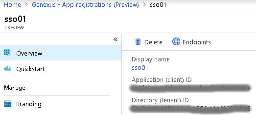

Since the introduction of OAuth 2.0 Authentication in GeneXus Access Manager, it is possible to authenticate to a broader set of providers. This article explains what to do in GAM backend, to authenticate to Office 365. For more information on how to configure Azure, see Application Registration in Azure Active Directory.
Add a new OAuth 2.0 authentication type in the GAM - Web Backoffice and set the associated basic parameters:
You need to fill in detailed information in the following tabs:
Enter Cliend Id, Client Secret and Redirect URL. Notice the URL is the base URL for your application.
Set the following parameters:
Use the LoginOauth20 method from the GAM Repository external object, detailing your OAuth 2.0 configuration name. For example, if you set 'Office365' for the previous configuration:
Event 'Login' GAMRepository.LoginOauth20(!"Office365") // Authentication Type Name must match the backend definition EndEvent
If you want to force a logout from the Identity provider you will need to invoke the following URL with your desired callback url:
https://login.windows.net/common/oauth2/logout?post_logout_redirect_uri=<my_callback_URL>
In case of any error, enable the GAM trace to get more information on the error.
AADSTS90002: Tenant organizations not found. This may happen if there are no active subscriptions for the tenant. Check with your subscription administrator.
Check your Azure server-side configuration as it seems the URL configured in GAM are wrong.
AADSTS50011: The reply url specified in the request does not match the reply urls configured for the application: 'GUID'.
Verify your Endpoint URLs are correctly configured and match the location of your GAM application. Go to the Azure portal \ Azure Active Directory application; select your application and check the associated endpoints.

AADSTS70001: Application 'GUID' is disabled.
Check your Azure application is correctly configured.
AADSTS70002: Error validating credentials. AADSTS50012: Invalid client secret is provided
Review the password settings on the Azure application configuration site and update your GAM configuration.
Message: AADSTS50020: We are unable to issue tokens from this api version for a Microsoft account. Please contact the application vendor as they need to use version 2.0 of the protocol to support this.
Review the following Azure registered Application endpoint and the associated configuration within GAM.
Oauth 2.0 authentication is available in GeneXus Access Manager since GeneXus 15 Upgrade 11.
| Backlinks | ||
| Application Registration in Azure Active Directory | GAM - Oauth 2.0 Authentication Type | GAM Oauth 2.0 Authentication Type (GeneXus 17 upgrade 4 or prior) |
| Toc:GeneXus Access Manager (GAM) |